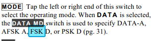

Also that the K3 is in Data MD for FSK D.

Bob – W6OPO
From: Chat1 [mailto:chat1-bounces@ncdxc.org] On Behalf Of Ed Muns via Chat
Sent: Sunday, December 28, 2014 4:06 PM
To: garry@ni6t.com
Cc: 'NCCC Main Reflector'; 'NCDXC Chat'
Subject: Re: [NCDXC Chat] [NCCC] Need RTTT help
Check your K3 digital mode to be sure it is FSK 45 and not AFSK or something else.
Ed W0YK
Every time I go away from RTTY for a while, I need to be retrained on setting up my rig, This cost me big time early this morning. Previously, it worked flawlessly.
Rig: K3, Microham Microkeyer, DX4WIN, MMTTY (from within DX4WIN).
The problem: The settings that worked the last time I made a RTTY Q are not working.
Symptoms: pressing a message key keys the transmitter, and the keying spectrum displays in the MMTTY window, but a steady cxr is transmitted--i.e. no diddling. Carrier turns off at the end of the message.
Any ideas from anyone with a similar setup? I have walked through the MK and DX4WIN and MMTTY setup procedure for DX4WIN.
Garry, NI6T